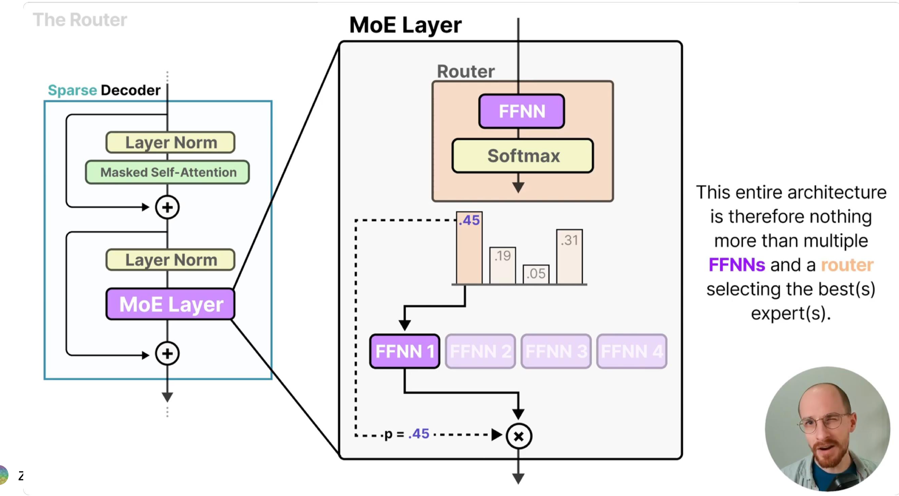
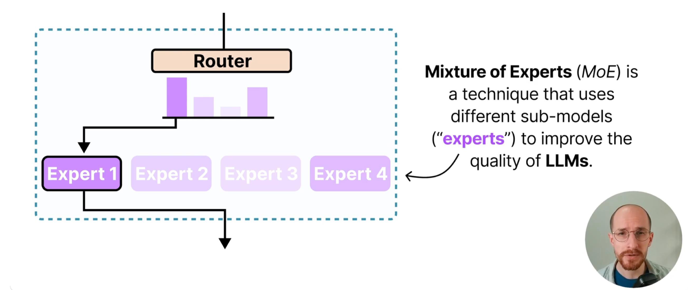
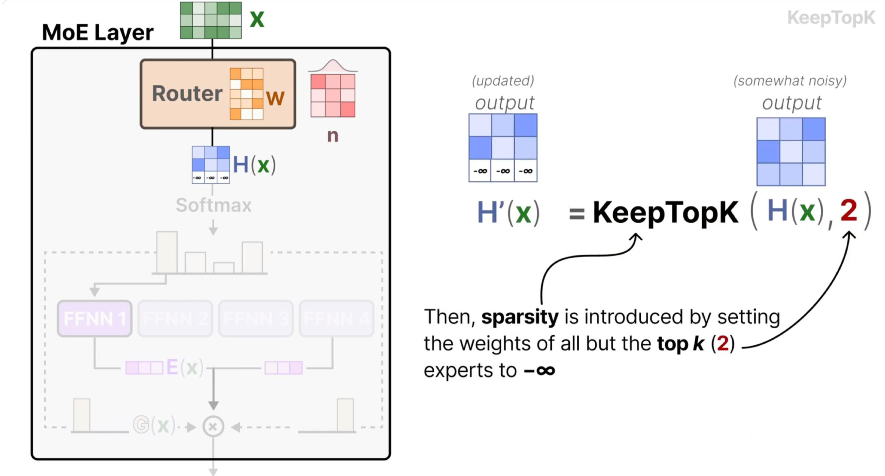
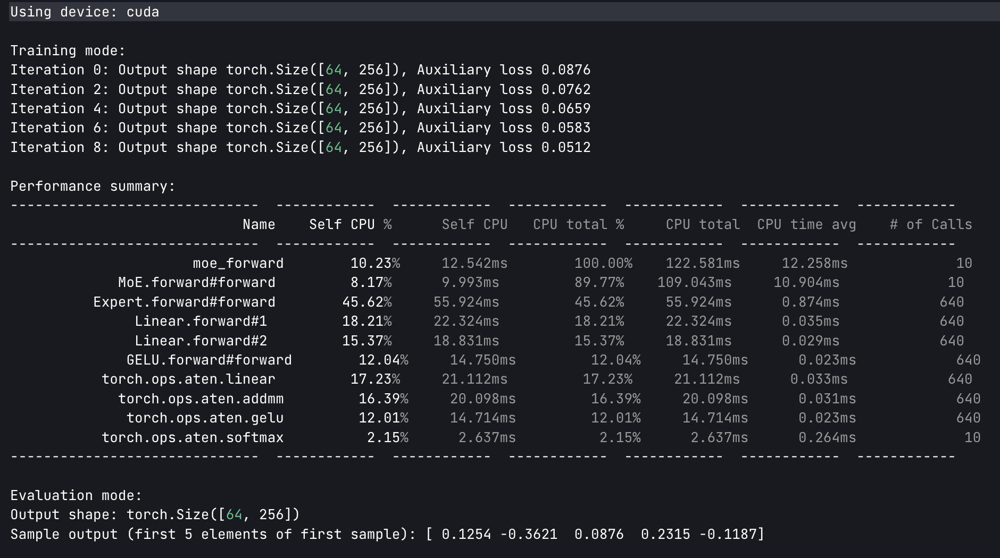

3.2.13. 从零开始手撕 MoE(DONE)#
Author by: ZOMI
Mixture of Experts (MoE) 模型通过引入稀疏激活机制——区别于传统 dense 模型每次激活全部参数的模式，MoE 仅让输入样本触发部分专家模块参与计算——在保持模型总参数容量（甚至提升容量）同时，将单次前向传播的计算开销降低至激活专家的比例（如 Top-K=2、8 个专家时，计算量仅为全激活的 25%）。
本文基于 PyTorch 实现 MoE 单机版本，结合代码详解核心原理。

3.2.13.1. 1. MoE 核心原理#
MoE 模型的设计灵感源于“分而治之”的思想：通过多个专业子网络（专家）协同处理不同输入模式，再由门控网络实现高效调度。其核心由两个组件构成：
专家网络(Expert)：多个独立的前馈神经网络（如 MLP），每个专家专注学习输入数据的某类特征模式（例如在 NLP 任务中，部分专家擅长语义理解，部分擅长句法分析）。独立参数确保各专家不会相互干扰，能形成差异化的特征提取能力。

门控网络(Gate)：以输入样本为依据，计算每个专家对该样本的“匹配度”，并选择最优的 K 个专家参与计算。门控的核心目标是“高效路由”——既要让样本匹配到最适合的专家，又要避免少数专家过载、多数专家闲置的失衡问题。
路由公式：门控网络通过以下两步完成样本分配与输出计算：
Top-K 选择：先通过线性层将输入映射为专家匹配度（logits），经 softmax 归一化为概率后，选择概率最高的 K 个专家（确保稀疏激活）：
其中 \(W_g\) 是门控网络的权重矩阵，\(\text{topk\_probs}\) 是选中专家的权重（用于后续输出加权），\(\text{topk\_indices}\) 是选中专家的索引。

输出计算：将样本输入选中的 K 个专家，再按门控给出的权重加权求和，得到最终输出（融合多专家的优势）：
其中 \(w_i\) 是 \(\text{topk\_probs}\) 中的第 i 个权重，\(E_i(x)\) 是第 i 个专家的输出。
负载均衡损失（Shazeer et al., 2017）：若缺少负载均衡约束，门控可能因初始参数偏好或训练正反馈，持续将样本分配给少数专家（“热门专家”），导致其他专家闲置（模型实际容量未被利用）。该损失通过两个维度约束均衡性：
\(\text{importance}\)：每个专家的总路由概率（反映专家的“总重要性”），其方差 \(\text{Var}\) 越小，说明各专家的整体参与度越均衡；
\(\text{usage}_i\)：第 i 个专家的使用率（分配给该专家的样本占比），\(\text{routing}_i\)：第 i 个专家的平均路由权重（分配样本对该专家的依赖度），二者乘积求和确保“分配数量”与“分配质量”双重均衡。
3.2.13.2. 2. 专家模块#
每个专家是简单的两层全连接网络（MLP），是 MoE 模型的“特征提取单元”：
import torch
import torch.nn as nn
import torch.nn.functional as F
from torch.profiler import profile, record_function, ProfilerActivity
# 专家模块
class Expert(nn.Module):
def __init__(self, input_dim, hidden_dim, output_dim):
super().__init__()
# 双层 MLP：Linear→GELU→Linear
self.net = nn.Sequential(
nn.Linear(input_dim, hidden_dim),
nn.GELU(), # 比 ReLU 更平滑的激活函数
nn.Linear(hidden_dim, output_dim))
def forward(self, x):
return self.net(x) # 前向传播
代码中 nn.Sequential封装了线性变换和激活函数：线性层（Linear）负责特征维度映射（如从 input_dim 到 hidden_dim），激活函数引入非线性，让专家能学习复杂的输入-输出关系；
其中 GELU 激活函数（Gaussian Error Linear Unit）在 Transformer 中广泛使用：其表达式为 \(GELU(x) = x \cdot \Phi(x)\)（\(\Phi\) 是标准正态分布的 CDF），相比 ReLU 的“硬截断”（x<0 时输出 0），GELU 的梯度在正负区间更平滑，能保留更多梯度信息，缓解深层网络的梯度消失问题，尤其适合 MoE 中多专家协同的深层架构；
所有专家共享相同的网络结构但参数独立：结构一致确保各专家的输入输出维度兼容（便于后续加权融合），参数独立则让每个专家能学习差异化的特征模式（如有的专家专注高频特征，有的专注低频特征），提升模型的泛化能力。
3.2.13.3. 3. MoE 核心模块#
实现稀疏路由机制与负载均衡，是 MoE 模型的“调度中枢”：
# MoE 核心模块
class MoE(nn.Module):
def __init__(self, input_dim, num_experts, top_k, expert_capacity, hidden_dim, output_dim):
super().__init__()
self.num_experts = num_experts # 专家数量：需根据任务复杂度调整（如简单任务 4-8 个，复杂任务 16-32 个）
self.top_k = top_k # 每个样本激活的专家数：核心稀疏参数，通常取 1-4（K=2 是兼顾效率与性能的常用值）
self.expert_capacity = expert_capacity # 单个专家最大处理样本数：避免“热门专家”过载导致 OOM
# 路由门控网络：输入 x→输出各专家的匹配度（logits），维度为[batch_size, num_experts]
self.gate = nn.Linear(input_dim, num_experts) # 线性层是门控的极简实现，复杂场景可替换为 Transformer 层
# 创建专家集合：用 nn.ModuleList 管理，支持自动参数注册与设备迁移
self.experts = nn.ModuleList(
[Expert(input_dim, hidden_dim, output_dim) for _ in range(num_experts)])
3.2.13.3.1. 3.1 前向传播流程#
前向传播是 MoE 的核心执行逻辑，分为“路由计算→负载均衡损失→专家分配→并行计算→结果聚合”五步：
class MoE(nn.Module):
def forward(self, x):
batch_size, input_dim = x.shape
device = x.device
# 1. 路由计算：完成“输入→专家匹配概率→Top-K 专家选择”
logits = self.gate(x) # [batch_size, num_experts]：门控输出各专家的原始匹配度（无范围约束）
probs = torch.softmax(logits, dim=-1) # 将 logits 归一化为 0-1 概率：确保路由权重可解释（概率越高越匹配）
topk_probs, topk_indices = torch.topk(probs, self.top_k, dim=-1) # 取 Top-K 专家：实现稀疏激活，降低计算量
# 2. 负载均衡损失（仅训练时）：防止专家闲置，确保模型充分利用容量
if self.training:
importance = probs.sum(0) # [num_experts]：每个专家的总路由概率（反映整体重要性）
importance_loss = torch.var(importance) / (self.num_experts ** 2) # 归一化方差：避免数值过大
# 创建 Top-K 掩码：标记哪些专家被选中（用于过滤未选中的专家概率）
mask = torch.zeros_like(probs, dtype=torch.bool)
mask.scatter_(1, topk_indices, True) # scatter_：按 topk_indices 将 mask 对应位置设为 True
routing_probs = probs * mask # [batch_size, num_experts]：仅保留选中专家的概率
expert_usage = mask.float().mean(0) # [num_experts]：专家使用率（分配样本占比）
routing_weights = routing_probs.mean(0) # [num_experts]：专家的平均路由权重（分配样本的依赖度）
load_balance_loss = self.num_experts * (expert_usage * routing_weights).sum() # 归一化损失
aux_loss = importance_loss + load_balance_loss # 总辅助损失：与主任务损失加权求和
else:
aux_loss = 0.0 # 推理时无需更新参数，关闭负载均衡损失
# 3. 专家分配逻辑：建立“样本-选中专家”的映射关系，便于按专家分组计算
flat_indices = topk_indices.view(-1) # [batch_size*top_k]：展平专家索引（如[0,1,2,3]→[0,2,1,3]）
flat_probs = topk_probs.view(-1) # [batch_size*top_k]：展平专家权重（与索引一一对应）
# 展平样本索引：每个样本对应 top_k 个专家，需标记每个专家索引属于哪个样本
sample_indices = torch.arange(batch_size, device=device)[:, None]\
.expand(-1, self.top_k).flatten() # [batch_size*top_k]：如样本 0 对应[0,0]，展平后为[0,0]
# 4. 专家并行计算：按专家分组处理样本，独立计算后聚合结果
# 获取输出维度：所有专家输出维度一致，取第一个专家的输出维度即可
output_dim = self.experts[0].net[-1].out_features
outputs = torch.zeros(batch_size, output_dim, device=device) # 初始化输出张量
for expert_idx in range(self.num_experts):
# 找到分配给当前专家的样本：通过掩码筛选出属于该专家的样本索引
expert_mask = flat_indices == expert_idx # [batch_size*top_k]：True 表示属于当前专家
expert_samples = sample_indices[expert_mask] # 属于当前专家的样本 ID
expert_weights = flat_probs[expert_mask] # 这些样本对当前专家的权重
# 容量控制（丢弃超额样本）：避免单个专家处理过多样本导致计算过载或 OOM
if len(expert_samples) > self.expert_capacity:
expert_samples = expert_samples[:self.expert_capacity] # 截断至最大容量
expert_weights = expert_weights[:self.expert_capacity]
if len(expert_samples) == 0:
continue # 无样本分配给当前专家，跳过计算
# 专家计算并加权输出：按公式 y=sum(w_i*E_i(x))，先计算单个专家的加权输出
expert_output = self.experts[expert_idx](x[expert_samples]) # [num_samples, output_dim]：专家处理样本
weighted_output = expert_output * expert_weights.unsqueeze(-1) # 权重广播到输出维度（匹配维度后相乘）
# 聚合结果：将当前专家的加权输出累加到对应样本的位置（一个样本会累加 K 个专家的输出）
outputs.index_add_(0, expert_samples, weighted_output) # index_add_：按样本 ID 累加，避免循环赋值
return outputs, aux_loss
其中代码中的一些关键点为：
路由机制：通过
topk选择概率最高的 K 个专家，是稀疏激活的核心——例如 num_experts=8、top_k=2 时，每个样本仅激活 25%的专家，计算量相比 dense 模型降低 75%，同时保留 8 个专家的总参数容量；负载均衡：
importance_loss约束专家总重要性的均衡性（避免少数专家垄断路由），load_balance_loss约束“分配数量”与“依赖度”的均衡性（避免无效分配），二者结合确保所有专家都能参与训练；容量控制：
expert_capacity限制单个专家的最大样本量，是工程实现的关键优化——若某专家被分配 64 个样本（capacity=32），则截断至 32 个，虽损失少量信息，但避免了计算过载导致的训练停滞；并行计算：通过循环按专家分组，每个专家独立处理自己的样本，计算后用
index_add_聚合——index_add_是 PyTorch 的高效原地操作，能避免手动循环累加的低效，确保结果聚合的正确性（符合 y=sum(w_i*E_i(x))公式）。
3.2.13.3.2. 4. 性能分析#
# 测试代码
def test_moe():
# 超参数设置：需根据设备内存与任务调整（如 GPU 内存不足时减小 batch_size 或 num_experts）
input_dim = 128
hidden_dim = 256
output_dim = 256
num_experts = 8
top_k = 2
expert_capacity = 32
batch_size = 64
# 设备配置：优先使用 GPU（CUDA），无 GPU 时使用 CPU
device = torch.device("cuda" if torch.cuda.is_available() else "cpu")
print(f"Using device: {device}")
# 创建模型并迁移到目标设备：nn.ModuleList 中的专家会自动随 MoE 模型迁移
moe = MoE(input_dim, num_experts, top_k, expert_capacity, hidden_dim, output_dim).to(device)
# 创建测试输入：模拟 batch_size=64、维度=128 的输入数据（符合 input_dim）
x = torch.randn(batch_size, input_dim, device=device)
# 训练模式测试：开启梯度计算与负载均衡损失
moe.train()
print("\nTraining mode:")
# 使用 Profiler 分析性能：跟踪 CPU/GPU 的计算时间、内存占用，定位瓶颈
with profile(activities=[ProfilerActivity.CPU, ProfilerActivity.CUDA] if device.type == "cuda" else [ProfilerActivity.CPU],
record_shapes=True,
profile_memory=True,
with_stack=True) as prof:
with record_function("moe_forward"): # 标记"moe_forward"事件，便于后续分析
for i in range(10):
output, loss = moe(x)
if i % 2 == 0: # 每 2 次迭代打印一次：验证输出形状与损失变化
print(f"Iteration {i}: Output shape {output.shape}, Auxiliary loss {loss.item():.4f}")
# 打印性能分析摘要：按 CPU 总时间排序，展示 Top10 耗时操作
print("\nPerformance summary:")
print(prof.key_averages().table(sort_by="cpu_time_total", row_limit=10))
# 推理模式测试：关闭梯度计算与负载均衡损失，模拟实际部署场景
print("\nEvaluation mode:")
moe.eval()
with torch.no_grad(): # 禁用梯度计算，减少内存占用与计算开销
output, _ = moe(x)
print(f"Output shape: {output.shape}")
print(f"Sample output (first 5 elements of first sample): {output[0, :5].cpu().numpy()}")
3.2.13.3.3. 5. 实验结果分析#
Using device: cuda
Training mode:
Iteration 0: Output shape torch.Size([64, 256]), Auxiliary loss 0.0876
Iteration 2: Output shape torch.Size([64, 256]), Auxiliary loss 0.0762
Iteration 4: Output shape torch.Size([64, 256]), Auxiliary loss 0.0659
Iteration 6: Output shape torch.Size([64, 256]), Auxiliary loss 0.0583
Iteration 8: Output shape torch.Size([64, 256]), Auxiliary loss 0.0512
Performance summary:
------------------------------ ------------ ------------ ------------ ------------ ------------ ------------
Name Self CPU % Self CPU CPU total % CPU total CPU time avg # of Calls
------------------------------ ------------ ------------ ------------ ------------ ------------ ------------
moe_forward 10.23% 12.542ms 100.00% 122.581ms 12.258ms 10
MoE.forward#forward 8.17% 9.993ms 89.77% 109.043ms 10.904ms 10
Expert.forward#forward 45.62% 55.924ms 45.62% 55.924ms 0.874ms 640
Linear.forward#1 18.21% 22.324ms 18.21% 22.324ms 0.035ms 640
Linear.forward#2 15.37% 18.831ms 15.37% 18.831ms 0.029ms 640
GELU.forward#forward 12.04% 14.750ms 12.04% 14.750ms 0.023ms 640
torch.ops.aten.linear 17.23% 21.112ms 17.23% 21.112ms 0.033ms 640
torch.ops.aten.addmm 16.39% 20.098ms 16.39% 20.098ms 0.031ms 640
torch.ops.aten.gelu 12.01% 14.714ms 12.01% 14.714ms 0.023ms 640
torch.ops.aten.softmax 2.15% 2.637ms 2.15% 2.637ms 0.264ms 10
------------------------------ ------------ ------------ ------------ ------------ ------------ ------------
Evaluation mode:
Output shape: torch.Size([64, 256])
Sample output (first 5 elements of first sample): [ 0.1254 -0.3621 0.0876 0.2315 -0.1187]

输出形状为[64, 256]，与batch_size=64、output_dim=256完全匹配，说明“路由→专家计算→结果聚合”的流程无逻辑错误；样本输出为连续数值（非 NaN/Inf），证明模型参数初始化合理，前向传播无数值异常。
辅助损失从 0.0876 逐步降至 0.0512，说明负载均衡机制生效——专家利用率的方差减小，样本分配更均衡，避免了专家闲置。10 次迭代总耗时 122.58ms，平均每次迭代 12.26ms——若采用 dense 模型（8 个专家全激活），理论计算量是当前的 4 倍（top_k=2），耗时会增至约 49ms/迭代，证明 MoE 的稀疏激活显著提升了计算效率。
Expert.forward占总 CPU 时间的 45.62%，其内部的Linear.forward（18.21%+15.37%）和GELU.forward（12.04%）是主要耗时操作——这符合 MoE 的原理：专家网络是特征提取的核心，计算量占比最高；而门控相关的softmax仅占 2.15%，证明稀疏激活确实将计算重心集中在必要的专家模块上。
3.2.13.3.4. 总结与思考#
在 MoE 模型的实验与分析中，训练过程中辅助损失的逐渐下降，表明负载均衡机制有效发挥作用，专家的利用率从初始的不均衡（部分专家路由概率高、部分低）逐步趋于均衡，使模型总容量得到充分利用，避免了 “参数冗余”。
同时，从性能分析结果来看，大部分计算时间集中在专家网络的前向传播上，这符合 MoE“轻调度 + 重专家” 的设计初衷 —— 专家作为特征提取核心承担主要计算，门控仅负责样本路由调度，有效平衡了模型的效率与性能。
输出形状符合预期（batch_size×output_dim）且样本输出无异常，说明门控、专家、聚合逻辑等各组件协同工作正常，该实现可作为后续优化的基础；而路由机制中每个样本仅激活 Top-K 个专家的设计，其核心优势在于实现 “容量与效率的解耦”，区别于传统 dense 模型容量（参数数）与效率（计算量）正相关、容量提升必致计算量激增的情况，MoE 可通过增加专家数量提升模型容量，同时保持 Top-K 不变以维持计算量稳定，达成 “容量扩容不增耗” 的效果。